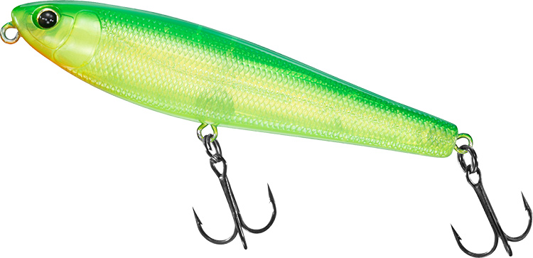
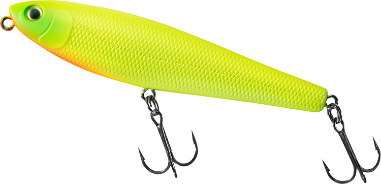
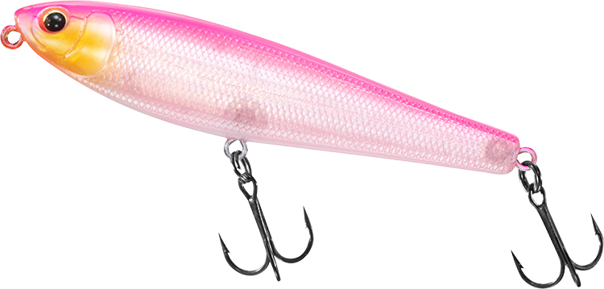
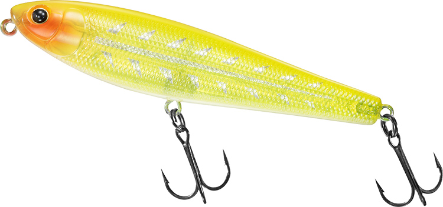
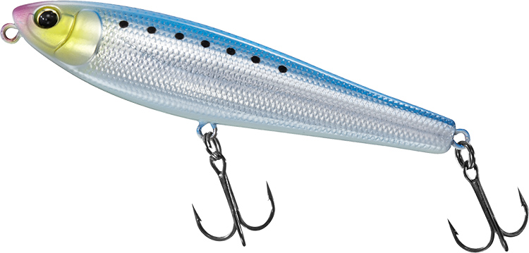

シルバーウルフ ラフトリック90F
（SILVER WOLF ROUGH TRICK 90F）
シルバーウルフ ラフトリック90F（SILVER WOLF ROUGH TRICK 90F）はDAIWA（ダイワ）のチニング専用ペンシルベイトです。
チニングの聖地・大阪淀川生まれのチヌトップで、一般的なチニング用ペンシルより大きな90mmボディが特徴。爆風の河口でも安定して飛び、波立つ水面でも上滑りせずに水を押すことで、従来の小型トップでは出し切れなかった状況でもクロダイに水面を割らせます。

画像出典:DAIWA公式HP
スペック
- メーカー
- DAIWA（ダイワ）
- タイプ
- フローティング（ペンシルベイト）
- 全長
- 90mm
- 自重
- 13.5g
- フック
- サクサストレブル#6
- リング
- #3
- ターゲット
- クロダイ（チヌ）・キビレ
- 価格
- 1,760円（税込）
▼今すぐチェック

ラフトリック90Fの特徴
荒れた河口のオープンエリアでもクロダイを呼べる、大型の“コーリング”ペンシルベイト
-
飛行姿勢にこだわったウエイト配置で大遠投
ラインアイとリアアイを結ぶ直線上にウエイトボールを配置し、キャスト時の飛行姿勢を安定させている。大河川の河口で沖に向かってフルキャストする使い方でも、ブレの少ない爽快なキャストフィールで飛距離を稼げる。
-
波立つ水面でも上滑りせず、ワンノッカーサウンドでアピール
水絡みとアクションを考えて導き出したシルエットで、風波でガチャつく水面でも上滑りせずに強く水を押す。大型のウェイトボールが生むワンノッカーサウンドとあわせて、クロダイに存在をアピールする。
-
チヌのバイトに合わせたフロントフック位置とサクサス
チヌ・キビレはサイドや後方からのバイトが多いため、フロントフックをボディセンターより後方に配置。刺さり性能を高めたサクサスフックとの組み合わせで、大きめのボディでもフッキング率を確保している。
ラフトリック90Fの使い方
基本は首振りのドッグウォーク。ベースとなったハンドメイドペンシル「イマペン 鮎90」譲りの立ち浮き姿勢と、ワイド過ぎないドッグウォークでチヌのバイトをはじかず、フッキングまで持ち込みやすい設計です。
広い河口では沖に向かってフルキャストし、一定のリズムでドッグウォークさせながら広く探るのが基本。バイトがあっても乗らないときは、アクションを止めすぎずにそのまま首を振らせ続けると、追い食いを誘いやすくなります。
ラフトリック90Fの得意な状況
飛距離が必要な河口のオープンエリアや、風波でガチャつくラフウォーターが最大の出番。
潮位が上がって「時合いが終わった」とされがちな高潮位のタイミングなど、従来の小型ポッパーやペンシルでは出し切れなかった状況でも存在をアピールできるのが強み。荒れた日のチヌトップの切り札になる1本です。
ワンポイント
穏やかな水面や膝下のシャローでアピールが強すぎると感じたら、同じシリーズの70Fに持ち替えるのがメーカー推奨の使い分けです。
逆に、風波が出てきて小型トップが水面で埋もれ始めたら90Fの出番。その日の水面の荒れ具合でサイズを選ぶと、組み立てがはっきりします。
ラフトリックシリーズの使い分け
| モデル | 全長／自重 | 得意な場面 |
|---|---|---|
| 70F | 70mm／8.5g | 膝下水深のシャローや水面が穏やかな状況。より繊細なアクションと操作性 |
| 90F | 90mm／13.5g | 広い河口のオープンエリアや荒れた水面。飛距離とアピール力重視（本記事のモデル） |
メーカーによると、90Fが広いエリアをカバーして荒れた状況でもアピールするのに対し、70Fは90Fではアピールが強すぎると感じる場面で真価を発揮するモデル。70Fも#6フックを採用しているので、ストラクチャー周りのパワーファイトにも対応できます。
人気カラー
ラフトリック90Fは全11色展開。チニングでオススメのカラーを厳選して紹介します。

マットチャート視認性とアピールを両立したチャート系の定番。

ピンクバッククリアクリアボディで食わせやすく、ピンクの背中で視認性も確保。

イエローボーンボーン系の水面での見えやすさに、イエローのアピールを加えた1色。

マイワシナチュラルなベイトカラー。澄み潮や日中に。
画像出典:DAIWA公式HP
ラフトリック90Fに似ているルアー
-
 チュパゾー60
ブルーブルー
詳細はこちら＞
チュパゾー60
ブルーブルー
詳細はこちら＞
全長60mm・自重7gのチヌ用ペンシルベイト。ラフトリック90Fより小型で、穏やかな水面やシャローでナチュラルに見せたいときの持ち替えに。
-
 プガチョフコブラ60
ima
詳細はこちら＞
プガチョフコブラ60
ima
詳細はこちら＞
全長60mm・自重6gのクロダイ用トップウォーター。吸い込み重視の控えめアクションで、ミスバイトが多いときに投入しやすい。
-
 イネムン60
ブルーブルー
詳細はこちら＞
イネムン60
ブルーブルー
詳細はこちら＞
全長60mm・自重6gのクロダイ用トップウォータープラグ。小型シルエットで、ラフトリックではアピールが強すぎる場面の選択肢になる。